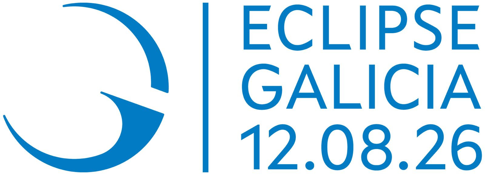
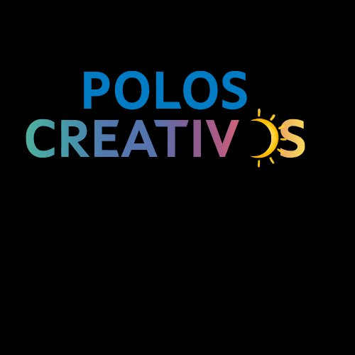

Vídeo · Experimento
O experimento en acción
Vídeo do experimento Arduino funcionando: a estación de sensores medindo a luz e a temperatura, gravada polo propio alumnado.
Proxecto Retos STEM · 2026
Un proxecto científico, tecnolóxico e radiofónico do alumnado de 3º e 4º de ESO, arredor da eclipse solar total do 12 de agosto de 2026.


Conta atrás ata a totalidade · 12 de agosto de 2026, 20:30 CEST
O alumnado de 3º e 4º de ESO convértese en científicos, programadores e comunicadores para documentar, medir e divulgar a eclipse solar total do 12 de agosto de 2026 dende Ferrol.
Todo o traballo está realizado integramente polos estudantes, arredor de tres liñas complementarias. A continuación pódense consultar e probar directamente os produtos creados en cada unha delas.
Unha estación de sensores (DHT22 e LDR) sobre Arduino UNO que rexistra a temperatura, a humidade e a intensidade luminosa antes, durante e despois da eclipse. Inclúe o vídeo do experimento real e a páxina que controla e visualiza os datos.
Vídeo do experimento Arduino funcionando: a estación de sensores medindo a luz e a temperatura, gravada polo propio alumnado.
Páxina que recolle e representa os datos da estación Arduino, mostrando como descenden a luz e a temperatura no instante da eclipse.
Abrir a páxinaDúas aplicacións programadas polo alumnado en HTML, CSS e JavaScript: unha páxina informativa sobre como observar a eclipse con seguridade e un videoxogo de aventura gráfica ambientado no fenómeno.
Datos astronómicos, riscos para a vista, normas de observación segura e unha conta atrás ata o momento da totalidade.
Abrir a páxinaVideoxogo no que o usuario percorre a cidade para mercar o material necesario para observar a eclipse, xestionando o orzamento. Aprendizaxe a través do xogo.
Abrir o xogoUn programa de radio divulgativo producido, locutado e editado polo propio equipo, que se complementa coa difusión nas redes sociais do proxecto (@recreotecno_tirsomolinaferrol) para chegar a un público máis amplo.
Programa divulgativo: que é unha eclipse, onde se verá mellor, normas de observación segura e datos curiosos. Escóitao aquí mesmo.
Publicación do proxecto na conta do equipo @recreotecno_tirsomolinaferrol, para que o eclipse e o traballo do alumnado cheguen á comunidade educativa e ao público xeral.
Síntese dos elementos requiridos pola convocatoria Retos STEM (Resolución do 8 de maio de 2026).
Equipamento e ferramentas do Polo Creativo do centro empregadas no desenvolvemento integral do proxecto.
Detrás de cada liña de traballo hai un grupo de estudantes de 3º e 4º de ESO que asumiron, de verdade, os papeis de científicos, programadores e comunicadores.
Proxecto presentado a
Todos os contidos deste proxecto están publicados baixo licenza Creative Commons Recoñecemento – Non comercial – Compartir igual 4.0 Internacional, segundo as pautas da convocatoria de Polos Eclipsados.